Key Metrics
The Problem
Telecom operators face a fundamental tension: business domains need data fast, but data quality and governance can't be compromised. A single-source-of-truth approach is required across customer retention, revenue assurance, network operations, marketing, and more — yet each domain has distinct analytical needs.
The goal was to design a platform that ingests heterogeneous telecom sources (CDRs, billing, network KPIs, roaming, campaigns, complaints), transforms them through one bronze/silver/gold pipeline, and serves eight business domains from shared core tables. All source data here is synthetic, produced by seeded Python generators.
Architecture

The diagram shows the target design. The repository holds the generators, PySpark pipeline code, dbt models, ML modules and Terraform; Airflow, MLflow and an IoT source follow.
Medallion Architecture
The pipelines are written for a bronze → silver → gold Delta Lake pattern:
- Bronze: PySpark ingestion with Delta MERGE on a business key, ingestion metadata columns, and a dead-letter table for invalid rows. Subscriber IDs in CDRs are already SHA-256 hashed by the generators.
- Silver: Configurable SHA-256 masking of PII columns, deduplication and validation. Great Expectations rules are defined for CDR, network KPI and billing tables, and a schema-drift check flags added, removed or retyped columns.
- Gold: 10 dbt core models (staging, customers, plans, towers, network KPIs, billing summary) feeding 15 mart models across the 8 domains.
Eight Business Domains
Local-Cloud Parity
The design goal: develop locally against emulators and keep one Terraform tree for Azure. Every Azure resource is gated on a use_local_dev flag, and Docker Compose defines Azurite, MinIO, Redpanda and Postgres as local stand-ins.
| Environment | Purpose | Infrastructure |
|---|---|---|
| Local | Development & testing | Docker Compose (Azurite, MinIO, Redpanda) |
| Dev | Feature development | Terraform module, F2 capacity |
| Staging | Pre-production validation | Terraform module, F4 capacity |
| Production | Planned production | Terraform module, F8 capacity |
| Ephemeral | PR testing | Workflow destroys on PR close |
ML & Governance
- ML modules: churn, fraud, revenue leakage, network failure, propensity, pricing elasticity, roaming and forecasting models in scikit-learn, covered by 41 unit tests
- Model registry: a JSON-file registry with development → staging → production stages and a pipeline orchestrator; MLflow tracking is next
- Quality gates: a gate manager with thresholds (quality score, schema drift, latency) that blocks promotion when a gate fails, tested in isolation
- Governance: Purview lineage and Unity Catalog are planned in the architecture
- Key Vault: a Terraform module for an RBAC vault with purge protection that stores storage and Event Hubs secrets
Where It Stands
The working parts are the six synthetic generators and the ML layer. The saved sample data holds 1,000 CDRs, 500 billing rows and 4,320,000 network KPI rows, and the last recorded pytest run collected 80 tests with no failures. Those tests cover the generators, ML modules, registry, alerting classes and quality gates.
Next steps:
- Add the dbt sources file and the six missing models, then compile on DuckDB.
- Port the validator to the current Great Expectations API and run the suites on the sample data.
- Run
terraform validateagainst the pinned azurerm provider and add a rollback step to the promotion workflow.